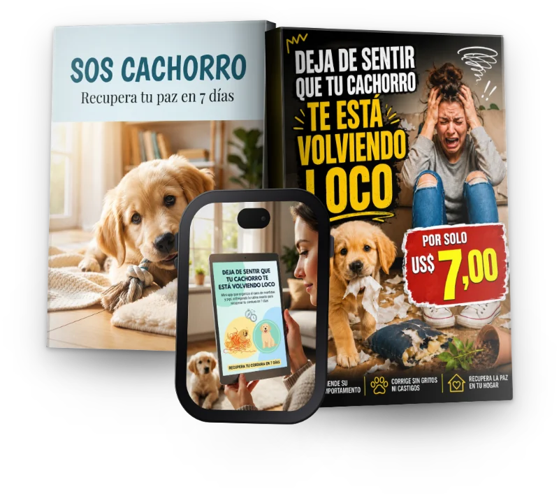
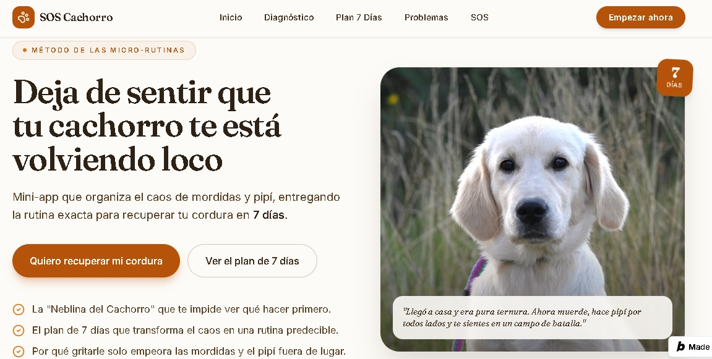
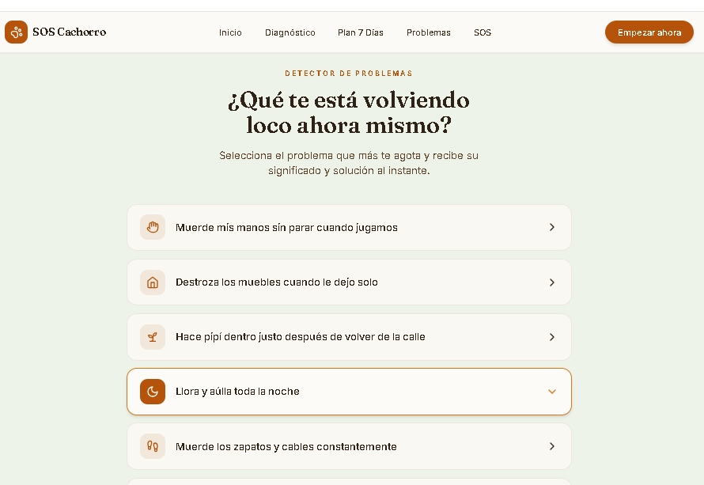
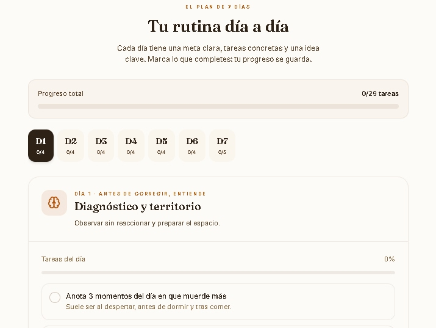
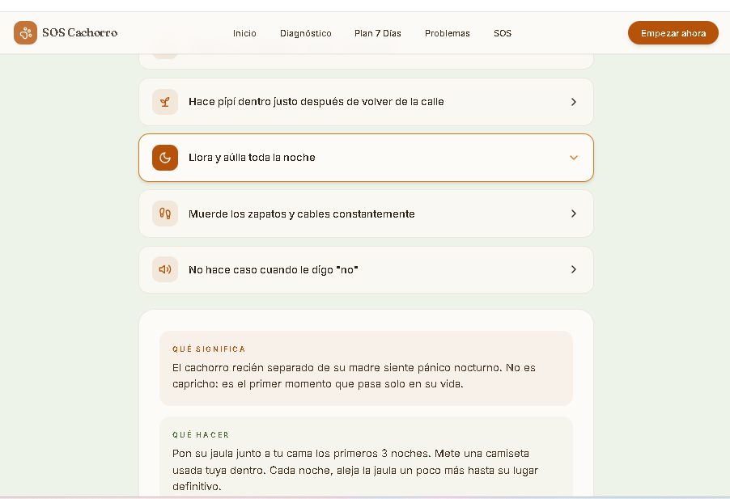
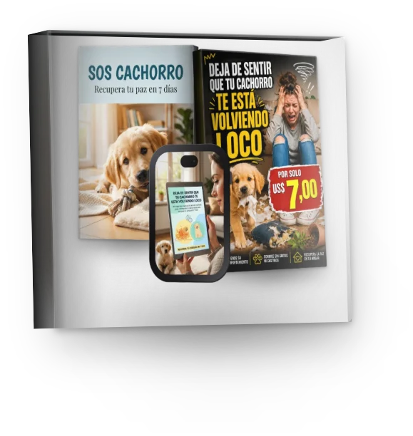

BONO 1: RESCATADOR DE MORDIDAS
Ebook que te dice qué hacer en el instante exacto de la mordida.
De US$ 19,00 · Por GRÁTIS
Mini-app que organiza el caos de mordidas y pipí, entregando la rutina exacta para recuperar tu cordura en 7 días.
Incluye Ebook explicativo "SOS cachorro"

La confusión de no saber por dónde empezar a educarlo (sin volverte loco en el intento).
El plan de 7 días que transforma el caos en una rutina predecible.
Por qué gritarle solo empeora las mordidas y el pipí fuera de lugar.
El truco de 10 minutos que te devuelve el control de tu casa.
Llegó a casa y era pura ternura. Ahora muerde, hace pipí por todos lados y te sientes en un campo de batalla. Trabajas todo el día y lo único que quieres es un momento de paz, pero el caos del cachorro te lo impide.
El problema es la "Parálisis del Primerizo". Tanta información contradictoria te congela. No sabes si regañar, ignorar, premiar o qué demonios hacer para que entienda.
Ya intentaste con la jaula, con el periódico, con el spray amargo. Nada funcionó porque no tenías un sistema. No es tu culpa, es que nadie te dio un mapa claro.
Un sistema simple para que tu cachorro entienda qué esperas de él.
Tu ingresas los datos de tu cachorro en 2 minutos. El sistema organiza el caos de mordidas y pipí. Recibes la rutina diaria lista. Sin gritos. Sin frustración.
Diagnóstico: Responde unas preguntas de tu cachorro y cuéntanos qué comportamientos te preocupan.
Genera tu rutina de 7 días para mordidas y pipí
Recibes el plan diario listo, con guías detalladas y checklist

¡Lista para usar desde el primer día!
Selecciona el problema que más te agota y recibe su significado y solución al instante.


Cada día tiene una meta clara, tareas concretas y una idea clave. Marca lo que completes: tu progreso se guarda.

Oferta por tiempo limitado
Pago 100% seguro
Las mordidas no desaparecen solas. Cada mueble roto, cada charco en el suelo, cada noche sin dormir, te acerca más al agotamiento.
Actuar hoy significa recuperar tu casa y tu cordura antes de que el cachorro se vuelva inmanejable.
¡Incluye Bonos Exclusivos!
Ebook que te dice qué hacer en el instante exacto de la mordida.
De US$ 19,00 · Por GRÁTIS
Guía para ajustar horarios y evitar accidentes en casa.
De US$ 18,00 · Por GRÁTIS
Generador de 5 juegos de interior para reducir la energía sin salir de casa.
De US$ 16,00 · Por GRÁTIS
Lista detallada de cómo preparar tu casa y evitar daños antes de que ocurran.
De US$ 17,00 · Por GRÁTIS
"Estaba al borde de la desesperación con mi cachorro. En 3 días, las mordidas bajaron y ya no hay pipí en la alfombra. Es un milagro."
"Pensé que mi cachorro era indomable. Con esta app, entendí qué hacer y ahora duermo 8 horas. Gracias."
"Mi casa era un desastre. Ahora tengo una rutina y mi cachorro me entiende. Es como tener un asistente personal."
Valor total: US$ 137,00
US$ 7,00

7 DIAS
7 días de seguridad total.
Si lo pruebas y sientes que no es para ti, te devolvemos tu dinero. Sin preguntas incómodas. Sin trámites.
Acceso inmediato después de la compra, directo desde el navegador.
No. Es una mini-app interactiva que te enseña con guías cortas y herramientas.
Verás cambios en las mordidas y el pipí desde el día 1. La rutina se establece en 7 días.
No, está diseñado para tutores primerizos y sin experiencia en adiestramiento.
Sí, está hecho para funcionar perfectamente en tu celular.
El sistema incluye planes B y ajustes para cachorros con más energía o distracciones.
Las rutinas son de 10-15 minutos al día, diseñadas para encajar en tu vida ocupada.
Sí, este plan está enfocado en la etapa crítica de 2 a 6 meses para establecer bases sólidas.
Pago 100% seguro
Catalina de Santiago acaba de adquirir el Ebook.